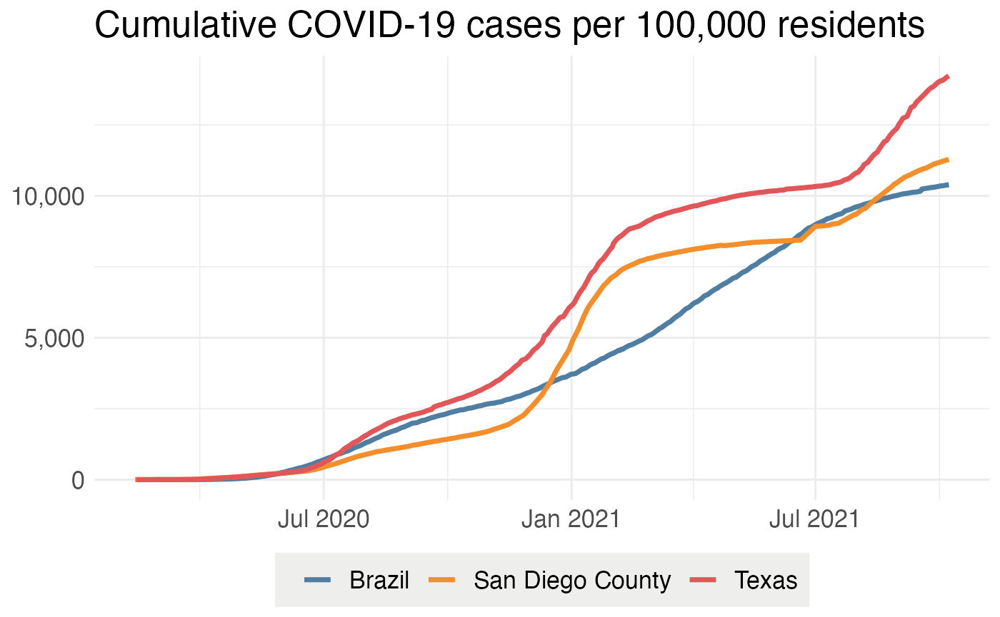

Outbreak.info’s Cases & Deaths Tracker allows you to compare trends in COVID-19 cases and deaths by location over time. We will walk you through how to run some essential queries. We can help you to answer questions like:
Import the packages we’ll use to access the data.
Note that unlike the SARS-CoV-2 Variant Prevalence functions, none of the Cases & Deaths functions or anything in this vignette require GISAID authentication through the authenticateUser() function.
# Package imports
library(outbreakinfo)The following is a data dictionary for your reference:
knitr::kable(epidemiologyDataDictionary())| API Field | Documentation |
|---|---|
| admin_level | Administrative level (World Bank regions = -1, countries = 0, states/provinces = 1, metropolitan areas = 1.5, counties = 2) |
| cbsa | Metropolitan area FIPS code |
| confirmed | Total number of confirmed COVID-19 cases |
| confirmed_doublingRate | Doubling rate of confirmed COVID-19 cases (number of days for COVID-19 cases to double) |
| confirmed_firstDate | Date of first confirmed COVID-19 case |
| confirmed_newToday | T if new COVID-19 cases reported, F if none |
| confirmed_numIncrease | Number of new confirmed COVID-19 cases |
| confirmed_pctIncrease | Percent increase in confirmed COVID-19 cases |
| confirmed_per_100k | Total number of confirmed COVID-19 cases per 100,000 persons |
| confirmed_rolling | Weekly rolling average of new confirmed COVID-19 cases |
| confirmed_rolling_14days_ago | Weekly rolling average of new confirmed COVID-19 cases 14 days prior |
| confirmed_rolling_14days_ago_diff | Difference between a weekly rolling average of new confirmed COVID-19 cases and the weekly rolling average of new confirmed COVID-19 cases 14 days prior |
| confirmed_rolling_per_100k | Weekly rolling average of new confirmed COVID-19 cases per 100,000 persons |
| country_gdp_per_capita | Country GDP per capita |
| country_iso3 | Country ISO3 |
| country_name | Country name |
| country_population | Total population of country |
| date | Date |
| daysSince100Cases | Days since 100 new confirmed cases of COVID-19 reported |
| daysSince10Deaths | Days since 10 new deaths due to COVID-19 reported |
| daysSince50Deaths | Days since 50 new deaths due to COVID-19 reported |
| dead | Total number of deaths due to COVID-19 |
| dead_doublingRate | Doubling rate of deaths due to COVID-19 (number of days for deaths due to COVID-19 to double) |
| dead_firstDate | Date of first death due to COVID-19 |
| dead_newToday | T if new deaths due to COVID-19 reported, F if none |
| dead_numIncrease | Number of new deaths due to COVID-19 |
| dead_pctIncrease | Percent increase in deaths due to COVID-19 |
| dead_per_100k | Total number of deaths due to COVID-19 per 100,000 persons |
| dead_rolling | Weekly rolling average of new deaths due to COVID-19 |
| dead_rolling_14days_ago | Weekly rolling average of new deaths due to COVID-19 14 days prior |
| dead_rolling_14days_ago_diff | Difference between a weekly rolling average of new deaths due to COVID-19 and the weekly rolling average of new deaths due to COVID-19 14 days prior |
| dead_rolling_per_100k | Weekly rolling average of new deaths due to COVID-19 per 100,000 persons |
| first_dead-first_confirmed | Number of days between first confirmed case of COVID-19 and first death due to COVID-19 |
| gdp_last_updated | Year that GDP was last updated |
| gdp_per_capita | GDP per capita |
| iso3 | ISO3 code |
| lat | Latitude |
| location_id | Location code |
| long | Longitude |
| mostRecent | T for most recent row of data, F for all others |
| name | Location name |
| num_subnational | Number of administrative divisions |
| population | Total population |
| state_iso3 | State ISO3 code |
| state_name | State name |
| sub_parts | County name, county FIPS code, state name |
| wb_region | World Bank region |
Description:
Get ISO3 codes for World Bank regions, countries, states/provinces, metropolitan areas, and/or counties.
Usage:
getISO3(locations_to_search)Arguments:
locations_to_search: a vector or list of location (World Bank region, country, state/province, metropolitan area, county) name(s)
Example:
## [1] "USA_US-TX" "BRA" "USA_US-CA_06073"Description:
Get exact spelling of locations at the same administrative level.
Usage:
searchLocations(locations_to_search, admin_level)Arguments:
locations_to_search: a vector or list of location (World Bank region, country, state/province, metropolitan area, county) name(s) at the same administrative level
admin_level: an integer representing an administrative level (World Bank regions = -1, countries = 0, states/provinces = 1, metropolitan areas = 1.5, counties = 2)
Example:
names=searchLocations(c("California", "Florida", "Texas"), admin_level=1)
print(names)## [1] "California" "Florida" "Texas"Description:
Retrieve a dataframe of up-to-date COVID-19 data from outbreak.info according to user specifications.
Usage:
getEpiData(name=NULL, location_id=NULL, wb_region=NULL, country_name=NULL, state_name=NULL, admin_level=NULL, date=NULL, mostRecent=NULL, fields=NULL, sort, size=1000)Arguments:
name: a vector or list of location (World Bank region, country, state/province, metropolitan area, county) name(s)
location_id: a vector or list of ISO3 codes representing locations (World Bank region, country, state/province, metropolitan area, county)
wb_region: a vector or list of World Bank region name(s)
country_name: a vector or list of country name(s)
state_name: a vector or list of state name(s)
admin_level: an integer representing an administrative level (World Bank regions = -1, countries = 0, states/provinces = 1, metropolitan areas = 1.5, counties = 2)
date: a vector or list of date(s) as string(s) in YYYY-MM-DD format
mostRecent: a Boolean (T/F) indicating if all data should be returned or only most recent
fields: a vector of API fields to include in results
sort: a string representing parameter to sort results by
size: an integer representing size
Example:
df=getEpiData(name="United States of America", date="2020-07-01")
df[!duplicated(df$name), c("name", "date", "confirmed", "dead")]## name date confirmed dead
## 1 United States of America 2020-07-01 2703296 128104Description:
Retrieve a dataframe of up-to-date COVID-19 data from outbreak.info for specified locaton(s) (World Bank region, country, state/province, metropolitan area, county).
Usage:
getLocationData(location_names)Arguments:
location_names: a vector or list of location (World Bank region, country, state/province, metropolitan area, county) name(s)
Example:
df=getLocationData(location_names=c("Brazil", "Texas", "San Diego County"))
df[!duplicated(df$name), c("name", "date", "confirmed")]## name date confirmed
## 318 Texas 2020-02-13 2
## 987 San Diego County 2020-02-13 1
## 647 Brazil 2020-02-26 1Description:
Retrieve a dataframe of up-to-date COVID-19 data from outbreak.info for all countries.
Usage:
getAdmn0()Arguments:
none
Example:
## [1] 199Description:
Retrieve a dataframe of up-to-date COVID-19 data from outbreak.info for all countries in one or more World Bank regions.
Usage:
getCountryByRegion(wb_regions)Arguments:
wb_regions: a vector or list of World Bank region names
Example:
region_df=getCountryByRegion("South Asia")
print(unique(region_df$name))## [1] "Nepal" "Sri Lanka" "India" "Afghanistan" "Pakistan"
## [6] "Bhutan" "Maldives" "Bangladesh"Description:
Retrieve a dataframe of up-to-date COVID-19 data from outbreak.info for all states/provinces in one or more countries.
Usage:
getAdmn1ByCountry(countries)Arguments:
countries: a vector or list of country names
Example:
state_df=getAdmn1ByCountry("India")
print(unique(state_df$name))## [1] "Delhi" "Punjab" "Rajasthan"
## [4] "Andaman and Nicobar" "Jammu and Kashmir" "Arunachal Pradesh"
## [7] "Karnataka" "Bihar" "Goa"
## [10] "Madhya Pradesh" "Andhra Pradesh" "Assam"
## [13] "Chandigarh" "Gujarat" "Haryana"
## [16] "Orissa" "Sikkim" "Tripura"
## [19] "Tamil Nadu" "Mizoram" "Meghalaya"
## [22] "Jharkhand" "Manipur" "West Bengal"
## [25] "Uttaranchal" "Nagaland" "Kerala"
## [28] "Maharashtra" "Uttar Pradesh" "Himachal Pradesh"
## [31] "Chhattisgarh" "Lakshadweep"Description:
Retrieve a dataframe of up-to-date COVID-19 data from outbreak.info for all metropolitan areas in the United States of America.
Usage:
Arguments:
none
Example:
metro_df=getMetroByCountry()Description:
Retrieve a dataframe of up-to-date COVID-19 data from outbreak.info for all counties in the United States of America.
Usage:
Arguments:
none
Example:
county_df=getAdmn2ByCountry()Description:
Retrieve a dataframe of up-to-date COVID-19 data from outbreak.info for all counties in given state(s).
Usage:
getAdmn2ByState(states)Arguments:
states: a vector or list of state names
Example:
ca_df=getAdmn2ByState("California")
length(unique(ca_df$name))## [1] 58Description:
Retrieve a dataframe of up-to-date COVID-19 data from outbreak.info for all locations at a specified administrative level.
Usage:
getByAdmnLevel(admin_level)Arguments:
admin_level: an integer representing an administrative level (World Bank regions = -1, countries = 0, states/provinces = 1, metropolitan areas = 1.5, counties = 2)
Example:
admin_df=getByAdmnLevel(-1)
print(unique(admin_df$name))## [1] "East Asia & Pacific" "North America"
## [3] "Europe & Central Asia" "South Asia"
## [5] "Middle East & North Africa" "Latin America & Caribbean"
## [7] "Sub-Saharan Africa"Description:
Plot a metric of interest using up-to-date COVID-19 data using data from outbreak.info for location(s) of interest (World Bank region, country, state/province, metropolitan area, county)
Usage:
plotEpiData(locations, variable)Arguments:
location: a vector or list of location name(s)
variable: metric to plot
Example:
p=plotEpiData(c("Texas", "Brazil", "San Diego County"), "confirmed_per_100k")
show(p)